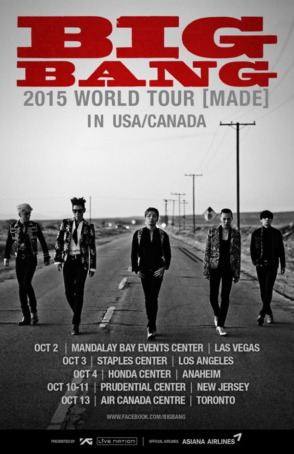
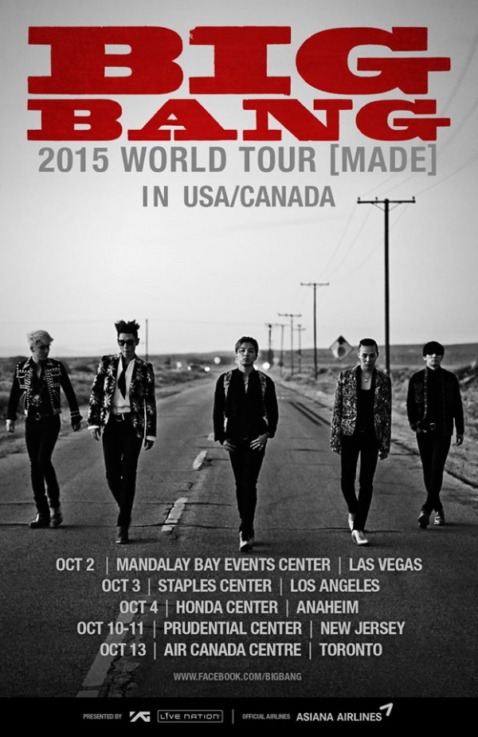

Click the photo to see the tour trailer. 
MADE
The MADE complete album consists of four separate albums that were released once a month at a time in May of 2015. Each album consisted of two songs, which together in the end made up the full album. The full MADE album was released in December 2016, which also contains three songs that were not released with the other four albums.
The MADE World Tour
Was the second world tour by BIGBANG. The tour visited 15 countries including China, Japan, Australia, and the United States. The tour kicked off with two shows in Seoul on April 25 and 26. Once ticket sales had opened, they sold out of every concert avaiable within seconds. The tour gathered 1.5 million fans around the world, making it the largest tour by any Korean act.
Click the photo to see the tour trailer. 